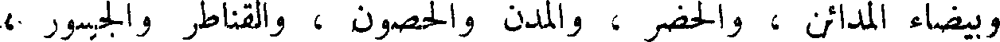
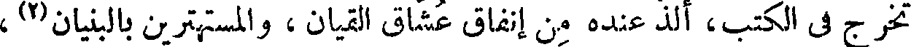
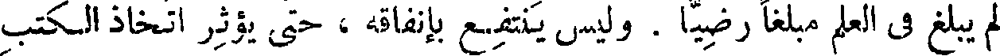
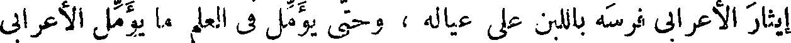
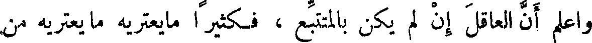
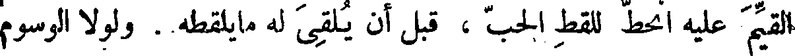
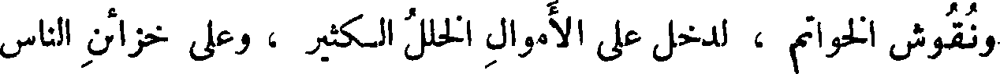

File: 000252.gt.txt (if the image is defective, simply delete all Arabic text and the line will be excluded)

وصنعة الزجاج والفسيفساء(2) ، والأسرنج(3) والزنجفور(4) واللازورد
File: 000253.gt.txt (if the image is defective, simply delete all Arabic text and the line will be excluded)

والأشربة ، والأنبجات(6) ، والأيارجات(7) ولكم المينا ، النشادر
File: 000254.gt.txt (if the image is defective, simply delete all Arabic text and the line will be excluded)
( تخليد العرب لمآثرها )
File: 000255.gt.txt (if the image is defective, simply delete all Arabic text and the line will be excluded)

وكانت العرب في جاهليتها تحتال في تخليدها، بأن تعتمد في ذلك على
File: 000256.gt.txt (if the image is defective, simply delete all Arabic text and the line will be excluded)

الشعر الموزون ، والكلام المقفى ، وكان ذلك هو ديوانها . وعلى أن الشعر
File: 000257.gt.txt (if the image is defective, simply delete all Arabic text and the line will be excluded)

يفيد فضيلة البيان ، على الشاعر الراغب ، والمادح ، وفضيلة المأثرة ، على
File: 000258.gt.txt (if the image is defective, simply delete all Arabic text and the line will be excluded)

السيد المرغوب إليه ، والممدوح به . وذهبت العجم على أن تقيد مآثرها
File: 000259.gt.txt (if the image is defective, simply delete all Arabic text and the line will be excluded)

بالبنيان ، فبنوا مثل كرد بيداد(1) ، وبنى أردشير بيضاء إصطخر ،
File: 000260.gt.txt (if the image is defective, simply delete all Arabic text and the line will be excluded)

وبيضاء المدائن ، والحضر ، والمدن والحصون، والقناطر والجسور ،
File: 000261.gt.txt (if the image is defective, simply delete all Arabic text and the line will be excluded)

والنواويس . قال : ثم إن العرب أحبت أن تشارك العجم في البناء ،
File: 000262.gt.txt (if the image is defective, simply delete all Arabic text and the line will be excluded)

وتنفرد بالشعر ، فبنوا غمدان ، وكعبة نجران(2) ، وقصر مارد ، وقصر
File: 000263.gt.txt (if the image is defective, simply delete all Arabic text and the line will be excluded)

مأرب، وقصر شعوب(3) والأبلق الفرد؛ و [فيه وفي (4)] مارد ، قالوا
File: 000264.gt.txt (if the image is defective, simply delete all Arabic text and the line will be excluded)

« تمرد ما رد وعز الأبلق » وغير ذلك من البنيان . قال : ولذلك لم تكن
File: 000265.gt.txt (if the image is defective, simply delete all Arabic text and the line will be excluded)

الفرس تبيح شريف البنيان ، كما لا تبيح شريف الأسماء ، إلا لأهل
File: 000266.gt.txt (if the image is defective, simply delete all Arabic text and the line will be excluded)

38 على حيطان الدار ، وكالعقد على الدهليز وما أشبه ذلك ، فقال بعض من
File: 000267.gt.txt (if the image is defective, simply delete all Arabic text and the line will be excluded)

( السماع والكتابة )
File: 000268.gt.txt (if the image is defective, simply delete all Arabic text and the line will be excluded)

فالإنسان لا يعلم حتى يكثر سماعه ، ولا بد من أن تكون كتبه أكثر من
File: 000269.gt.txt (if the image is defective, simply delete all Arabic text and the line will be excluded)

سماعه ؛ ولا يعلم ، ولا يجمع العلم ،ولا يختلف [إليه](1) ،حتى يكون الإنفاق
File: 000270.gt.txt (if the image is defective, simply delete all Arabic text and the line will be excluded)

عليه من ماله ، ألذ عنده من الإنفاق من مال عدوه . ومن لم تكن نفقته التي
File: 000271.gt.txt (if the image is defective, simply delete all Arabic text and the line will be excluded)

تخرج في الكتب، ألذ عنده من إنفاق عشاق القيان ، والمستهترين بالبنيان(2) ،
File: 000272.gt.txt (if the image is defective, simply delete all Arabic text and the line will be excluded)

لم يبلغ في العلم مبلغا رضيا . وليس ينتفع بإنفاقه ، حتى يؤثر اتخاذ الكتب
File: 000273.gt.txt (if the image is defective, simply delete all Arabic text and the line will be excluded)

إيثار الأعرابي فرسه باللبن على عياله ، وحتى يؤمل في العلم ما يؤمل الأعرابي
File: 000274.gt.txt (if the image is defective, simply delete all Arabic text and the line will be excluded)

( مغالاة الزنادقة على تحسين كتبهم )
File: 000275.gt.txt (if the image is defective, simply delete all Arabic text and the line will be excluded)

في فرسه .
File: 000276.gt.txt (if the image is defective, simply delete all Arabic text and the line will be excluded)

وقال إبراهيم بن السندي مرة : وددت أن الزنادقة لم يكونوا حرصاء على
File: 000277.gt.txt (if the image is defective, simply delete all Arabic text and the line will be excluded)

المغالاة بالورق النقي الأبيض، وعلى تخير الحبر الأسود المشرق البراق ،
File: 000278.gt.txt (if the image is defective, simply delete all Arabic text and the line will be excluded)

وعلى استجادة الحط والإرغاب لمن يخط ، فإني لم أر كورق كتبهم ورقا ،
File: 000279.gt.txt (if the image is defective, simply delete all Arabic text and the line will be excluded)

ولا كالخطوط التي فيها خطا. وإذا غرمت مالا عظيما- مع حبي للمال وبغض
File: 000280.gt.txt (if the image is defective, simply delete all Arabic text and the line will be excluded)

الغرم - كان سخاء النفس بالإنفاق على الكتب ، دليلا على تعظيم العلم ،
File: 000281.gt.txt (if the image is defective, simply delete all Arabic text and the line will be excluded)

فما أكثر من يعزم على خمسة أسواط فيضرب مائة ؟ ! لأنه ابتدأ الضرب
File: 000282.gt.txt (if the image is defective, simply delete all Arabic text and the line will be excluded)

وهو ساكن الطباع ، فأراه السكون أن الصواب في الإقلال ، فلما ضرب
File: 000283.gt.txt (if the image is defective, simply delete all Arabic text and the line will be excluded)

تحرك دمه ، فأشاع فيه الحرارة فزاد في غضبه ، فأراه الغضب أن الرأي
File: 000284.gt.txt (if the image is defective, simply delete all Arabic text and the line will be excluded)

في الإكثار . وكذلك صاحب القلم ؛ فما أكثر من يبتدئ الكتاب وهو
File: 000285.gt.txt (if the image is defective, simply delete all Arabic text and the line will be excluded)

يريد مقدار سطرين ، فيكتب عشرة ! والحفظ مع الإقلال أمكن ،
File: 000286.gt.txt (if the image is defective, simply delete all Arabic text and the line will be excluded)

وهو مع الإكثار أبعد .
File: 000287.gt.txt (if the image is defective, simply delete all Arabic text and the line will be excluded)

( مفاضلة بين الولد والكتاب )
File: 000288.gt.txt (if the image is defective, simply delete all Arabic text and the line will be excluded)

واعلم أن العاقل إن لم يكن بالمتتبع ، فكثيرا ما يعتريه من
File: 000289.gt.txt (if the image is defective, simply delete all Arabic text and the line will be excluded)

ولده ، أن يحسن في عينه منه المقبح في عين غيره ، فليعلم أن لفظه أقرب
File: 000290.gt.txt (if the image is defective, simply delete all Arabic text and the line will be excluded)

نسبا منه من ابنه ، وحركته أمس به رحما من ولده ؛ لأن حركته شيء
File: 000291.gt.txt (if the image is defective, simply delete all Arabic text and the line will be excluded)

أحدثه من نفسه وبذاته ، ومن عين جوهره فصلت(1) ، ومن نفسه
File: 000292.gt.txt (if the image is defective, simply delete all Arabic text and the line will be excluded)

كانت ؛ وإنما الولد كالمخطة يتمخطها ، والنخامة يقذفها ، ولا سواء
File: 000293.gt.txt (if the image is defective, simply delete all Arabic text and the line will be excluded)

فوق فتنته بجميع نعمته .
File: 000294.gt.txt (if the image is defective, simply delete all Arabic text and the line will be excluded)

( ما ينبفى أن تكون عليه لغة الكتب )
File: 000295.gt.txt (if the image is defective, simply delete all Arabic text and the line will be excluded)

وليس الكتاب إلى شيء أحوج منه إلى إفهام معانيه ، حتى لا يحتاج
File: 000296.gt.txt (if the image is defective, simply delete all Arabic text and the line will be excluded)

وكما عرف المجنون لقبه ، والكلب اسمه . وعلى مثل ذلك فهم الصبي الزجر
File: 000297.gt.txt (if the image is defective, simply delete all Arabic text and the line will be excluded)

والإغراء ، ووعى المجنون الوعيد والتهدد(1) ، وبمثل ذلك اشتد حضر
File: 000298.gt.txt (if the image is defective, simply delete all Arabic text and the line will be excluded)

الدابة مع رفع الصوت ، حتى إذا رأى سائسه حمحم . وإذا رأى الحمام
File: 000299.gt.txt (if the image is defective, simply delete all Arabic text and the line will be excluded)

القيم عليه انحط للقط الحب ، قبل أن يلقي له مايلقطه . ولولا الوسوم
File: 000300.gt.txt (if the image is defective, simply delete all Arabic text and the line will be excluded)

ونقوش الخواتم ، لدخل على الأموال الخلل الكثير ، وعلى خزائن الناس
File: 000301.gt.txt (if the image is defective, simply delete all Arabic text and the line will be excluded)

الضرر الشديد .